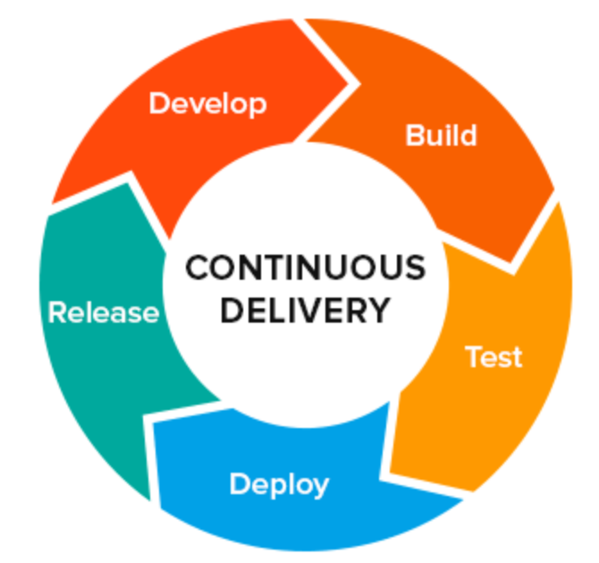
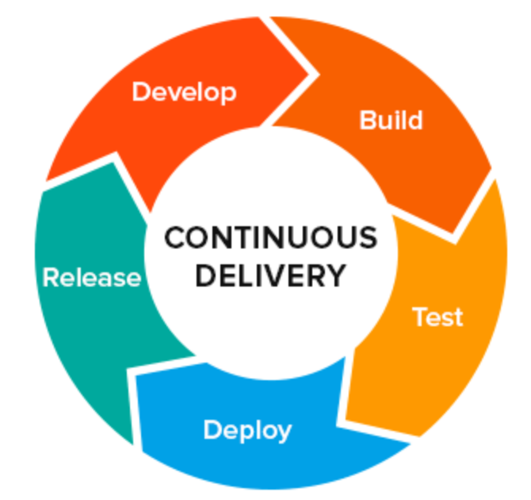

la Toolchain .NET née en 2018 et l'evolution de la toolchain Java, pour plus d'info voir : portail T&S / PICO

+
Orchestrator
L'orchestrateur est la pièce centrale de la plateforme d'integration
continue car c'est le moteur qui va lancer succèssivement toutes les phases permettant
le build de l'application  (recuperation du code dans Git, la comilation, les quality gates et pousser le livrable dans nexus : Jenkins est le produit qui joue ce role d'orchstrateur chez PF jenkins
continue car c'est le moteur qui va lancer succèssivement toutes les phases permettant
le build de l'application  (recuperation du code dans Git, la comilation, les quality gates et pousser le livrable dans nexus : Jenkins est le produit qui joue ce role d'orchstrateur chez PF jenkins
+
soanr
sonar
+
nexus
nexus
le bla bla que je veux test.urlmettre en conclusion de ma page HTML